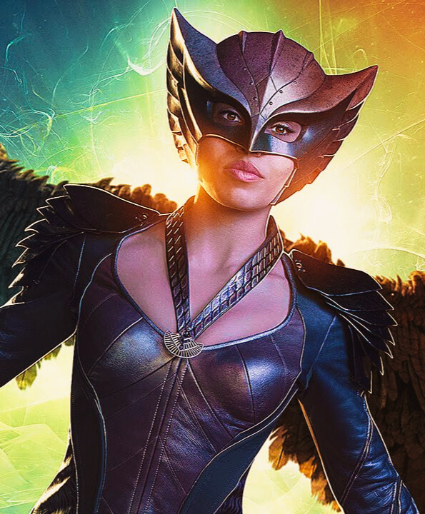

MULHER-GAVIÃO
Há milhares de anos, o Príncipe egípcio Quéops e sua amada, a Princesa Chay-Ara, entraram em contato com o Metal enésimo, um elemento do planeta Thanagar. A exposição ao elemento, combinado com o amor deles, fortaleceu suas almas e o laço entre elas. Eles foram assassinados em seguida por Hath-Set, um sacerdote corrupto de Anúbis. Em suas subseqüentes reencarnações, Quéops e Chay-Ara sempre renasciam destinados a se encontrar e se apaixonar. Nos anos 40, Quéops emergiu como Carter Hall que com a ajuda do Metal Enésimo tornou-se o Gavião Negro. Chay-Ara havia renascido como a jornalista Shiera Sanders. Carter e seu amigo Perry Carter construíram um par de asas para Shiera que se tornou a Mulher-Gavião e ambos ingressaram na Sociedade da Justiça e no Comando Invencível. Carter e Shiera se casaram e tiveram um filho, Hector Hall. A Sociedade da Justiça foi eventualmente presa em limbo interdimensional e condenada a lutar contra o Ragnarok por anos antes de ser liberta pelo viajante temporal Tempus. Nesse meio-tempo, eles foram substituídos por um espião Thanagariano chamado Fel Andar e uma policial humana chamada Sharon Parker, como parte de uma conspiração engendrada pelos Thanagarianos, que queriam invadir a Terra. A Mulher-Gavião é um dos membros da nova Liga da Justiça. Durante uma missão a Thanagar com J'onn e John Stewart a procura de respostas sobre as suas novas asas de Nth Metal que teve incorporada ao seu corpo durante o evento Dark Nights: Metal.